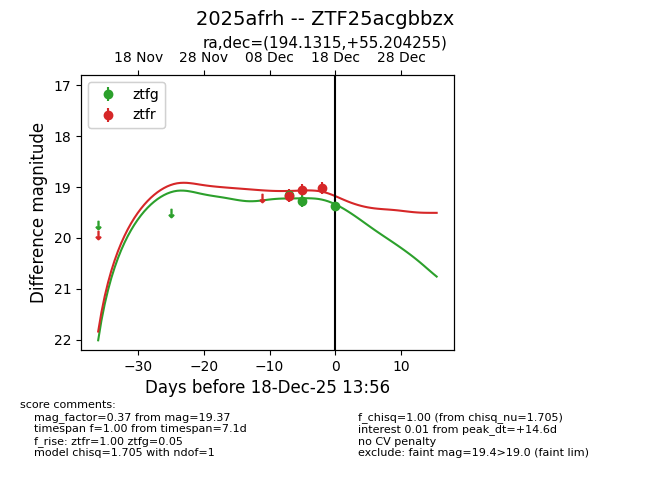
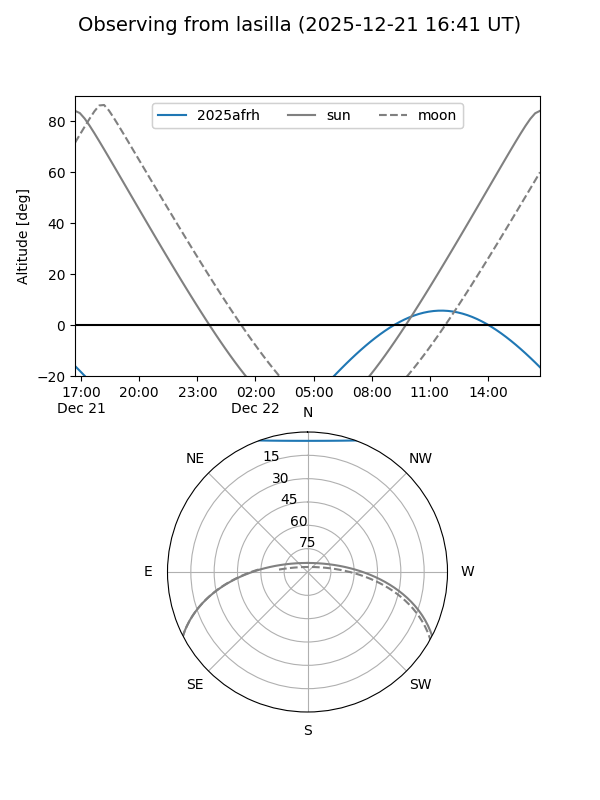
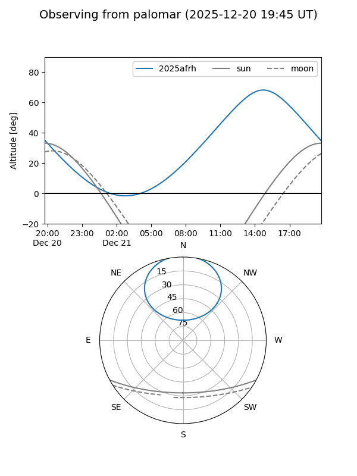
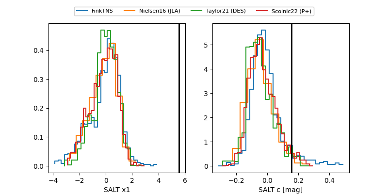

2025afrh
Target 2025afrh at 2025-12-21 12:12
Aliases and brokers:
FINK: fink-portal.org/ZTF25acgbbzx
Lasair: lasair-ztf.lsst.ac.uk/objects/ZTF25acgbbzx
ALeRCE: alerce.online/object/ZTF25acgbbzx
TNS: wis-tns.org/object/2025afrh
YSE: ziggy.ucolick.org/yse/transient_detail/2025afrh
alt names
ZTF25acgbbzx (ztf,fink_ztf)
2025afrh (tns,yse)
Coordinates:
equatorial (ra, dec) = 194.1315,+55.20425
equatorial (HMS+DMS) = 12:56:31.57,+55:12:15.32
galactic (l, b) = (121.3903,+61.90876)
Flags:
Photometry:
last ztfg=19.41, ztfr=19.06
4 ztfg, 4 ztfr detections
Lightcurve

Visibility


Additional plots
